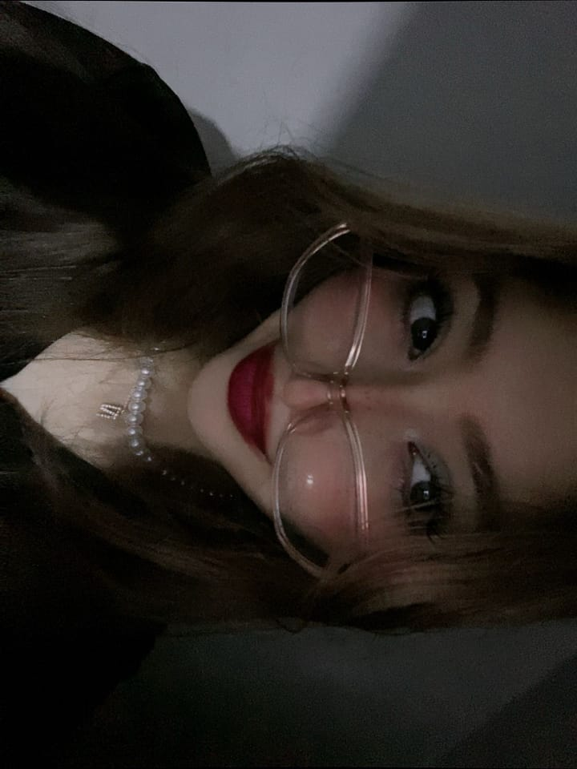

En este San Valentín quiero aprovechar para recordarte lo increíblemente afortunado que me siento de haberte encontrado. No solo por lo que significas en mi vida, sino por la belleza que irradias, esa que no solo se ve en tu rostro, sino en cada gesto, en cada palabra, en cada sonrisa.
Y, si tuviera que describir algo que me deja sin palabras, serían tus ojitos, esos que siempre tienen esa chispa tan especial, como si pudieran ver más allá de todo, como si pudieran entender lo que no se dice. Cada vez que los miro, siento que el mundo se detiene por un segundo, y me pierdo en ellos, en su ternura y en la paz que me transmiten.
Más allá de cualquier detalle material que pueda ofrecerte, quiero que sepas que lo que más valoro es la forma en que haces brillar mi vida solo con tu presencia. A tu lado, el mundo parece más bonito, más cálido, y cada día me siento más agradecido por tenerte.
Hoy quiero prometerte que seguiré luchando por ti, por nosotros, porque lo que más quiero es verte sonreír, verte feliz, y acompañarte en cada paso que demos. Este San Valentín, mi regalo es un compromiso: ser siempre tu apoyo, y demostrarte, cada día, lo afortunado que me siento de ser parte de tu vida.
De: Un programador enamorado de una chica de ojitos bonitos.
